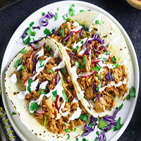
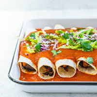
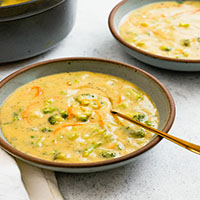
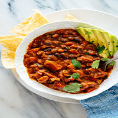
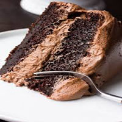
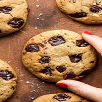

Switching to a Plant Based Diet
Switching to a plant based diet is the top thing that you can do end the mistreatment of animals in farming industries.
Plant based diets include eating patterns that focus on getting nutrients from plants. These nutrients can come from fruits, vegetabls, nuts, seeds, grains, beans, oils, and legumes. There are many different forms of plant based diets, including pescatarian, vegetarian and vegan.
Pescatarian diets are diets that still include fish, seafood, eggs and dary, but exclude meat and poultry.
Vegetarian diets exclude fish, seafood, meat, and seafood. These diets can still sometimes include eggs and dairy, but it depends on the person.
Vegan diets exclude all meat, fish, seafood, poultry, and animal by-products such as eggs, dairy, and fats.
Linked below are some recipes that include plant-based alternatives in the place of a meat or dairy option, so you can still make your favorite meals, but do so without harming any animals.
Tacos 
Lasagna

Enchiladas 
Creamy broccoli soup 
Chili 
Chocolate cake 
Chocolate chip cookies 